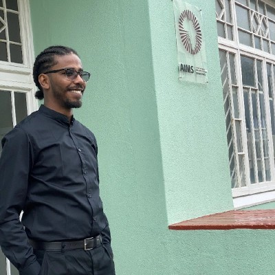

Cultivating human agency in the age of AI.
The Cape Institute for Safe AI (CISAI) is a research and capacity building node focused on addressing the risks from advanced AI, based in Cape Town, South Africa.
- Research Lab
- Open Workspace
- Residency Programs
- Fieldbuilding Events

What we do.

We expect AI to be the most transformative technology of our time, and as such we expect it to exacerbate the systemically vulnerable world we inhabit. With this in mind, we are establishing a research lab and creating a capacity building hub that will act as a Schelling point for people working on solving the challenges of rapid technological acceleration.
History
CISAI is the next iteration of AI Safety South Africa (AISSA). AISSA was founded in 2024 by Leo Hyams and Benjamin Sturgeon. They spent two years building the AI safety ecosystem in Cape Town, and South Africa more broadly. In 2025, AISSA grew from a two-person founding team into a hub running research programs and capacity building initiatives in partnership with leading AI safety organisations such as the UK AI Security Institute and the Cooperative AI Foundation.
CISAI builds on AISSA's capacity building mission by establishing a larger workspace and formally launching a research lab. This shift enables the organisation to host larger programs, establish a more permanent hub, and take on more ambitious research.
Preparing for a multi-agent world.
AI agents are currently being deployed in vast numbers across the internet without regulatory oversight. We expect the number of agents on the internet to scale exponentially, and for there to be unique failure modes associated with these large systems of heterogenous agents. This is why we are currently building a research lab focused on multi-agent safety.
Our Research Bets
The nature of AI progress is highly contested amongst experts and entangled in the deeply uncertain current geopolitical climate. Below we outline our research bets: premises that we find credible and that describe a world that we can impact for the better. We recognise that these claims are controversial and we are enthusiastic about debating and updating them!
Multi-agent
With increasingly autonomous agents being deployed, novel risks from multi-agent interactions arise. Large systems of multiple AI actors pose unique threats that need to be empirically characterised and mitigated. Single-agent safety and alignment techniques will be insufficient for addressing these complex interactions.
Multi-polar
The frontier of AI is incredibly difficult and costly to push, and second movers appear to catch up relatively easily. Currently, it appears that no AI developer is totally dominant, especially as the frontier remains jagged, and the returns of recursive self-improvement have not materialised yet. This, combined with multi-agent dynamics, will likely result in large systems of heterogenous AI agents with distinct incentives.
Alignment by ecosystem
An ecosystem with multiple powerful players may be more resilient than a world with massive power concentration, as they can provide checks and balances on each other. A world where near-frontier AI capabilities are available to many actors creates a form of decentralised and distributed defence against AI-enabled bad actors. While such a world involves its own risks, we think it may be more robust than relying on the benevolence of a singular AI superpower.
How we are stewarding a movement.

Our goal is to contribute to the AI safety effort by bringing the brightest minds in our network together, as we see phenomenal talent in Africa that is not being tapped. By creating a Schelling point on the continent, we can foster connection between local talent and the frontier of AI safety, facilitating collaboration with the global network. We believe that South Africa has the potential, if it plays its cards right, to join the ranks of AI middle powers and have a significant stake in steering the AI future for the better. We want to play a meaningful role in stewarding this future.
Open Workspace
We provide premium workspace for established and transitioning professionals working in AI safety and d/acc related fields. Our hub in Cape Town is the home for our lab, residency programs and community. The space lends itself to knowledge exchange and idea generation. You can apply to work from our offices, and we provide subsidised rates where needed.
Applications open!Research Residencies
We run programs for talent development in d/acc and AI safety related fields. Previously, we ran the Cooperative AI Research Fellowship, a 3-month in-person all-expense paid program where we connected fellows to senior researchers at Google Deepmind, Oxford, MIT, and more.
We will be hosting the PIBBSS fellowship from our space from November 2026 to February 2027.
See previous program.Fieldbuilding Events
We regularly organise field-building events such as reading groups (hosted at our workspace), hackathons, talks, and workshops. Our vibrant community is a vital part of building greater awareness and capacity for responding to the civilisational transition that we find ourselves in.
Browse our events calendar.Partners, Collaborators, and Funders


Who we are.
We are a tight-knit team with a strong culture. We balance the seriousness of our mission with light-heartedness, mindfulness, and care.

Leo Hyams
Founder, Executive DirectorLeo has grown CISAI from a local group of part-time researchers into a fully-funded institute working with globally relevant institutions and researchers. His role includes fundraising, culture, strategy, and managing stakeholder relationships, finances, and the team. He is also passionate about design: he made this website and the associated visual assets :)

Claude Formanek
Research DirectorClaude's research focus is on understanding the unique risks pertaining to multi-agent AI systems. He holds a PhD from the University of Cape Town, supported by a Cooperative AI Foundation PhD Fellowship, specialising in Offline Multi-Agent Reinforcement Learning. He has published in several top venues, including NeurIPS, ICLR, and ICML, and brings five years of industry experience as a Senior Machine Learning Research Engineer at InstaDeep.

Tegan Green
Operations DirectorTegan is a strong generalist who uses her significant project management experience to design and run exceptional programs at CISAI, such as the Cooperative AI Research Fellowship. She has a particular focus on improving the end-to-end experience of individuals that interact with the hub, drawing on her experience as a UX designer. She runs independent experiments in cooperative AI, and is interested in the implications of digital minds and how to promote human agency.

Jaco Du Toit
Evaluations LeadJaco is a machine learning engineer and researcher, focused on AI capability evaluations. He has worked with the CISAI team to develop many evaluations for the UK AI Security Institute. He is a lead author of AI safety research published at NeurIPS and was a lead researcher on CISAI's work collaborating with the UK AI Security Institute, where he worked closely with their Science of Evaluations team.

Benjamin Sturgeon
Strategic AdvisorBen co-founded AI Safety South Africa (the organisation that would become CISAI) with Leo in 2024. He is an AI safety researcher who recently completed the MATS fellowship, working with researchers from the UK AI Security Institute. He is currently on a research fellowship associated with the Centre for Long-Term Risk.

Omer Abead
Research ScientistOmer is a research scientist focused on understanding the properties of and dynamics within multi-agent AI systems. He holds Electrical Engineering and a Master's degree in AI for Science from AIMS South Africa, funded by DeepMind, and was a fellow on the Cooperative AI Research Fellowship.
Karabo Mokoena
Governance AffiliateKarabo works with CISAI on policy matters relating to AI governance. She is a candidate attorney at Michaelsons and has an LLM in Technology Law and Innovation from the University of Groningen. She has advised public data protection authorities, supported regulators in shaping autonomous vehicle frameworks, guided startups entering the EU AI market, and helped enterprises strengthen global trust and cybersecurity practices.
Reach out to us here.
Note that we are in the middle of a rebrand, so our socials link to our previous brand identity: AI Safety South Africa. We are currently updating this.
Message sent. We'll be in touch.